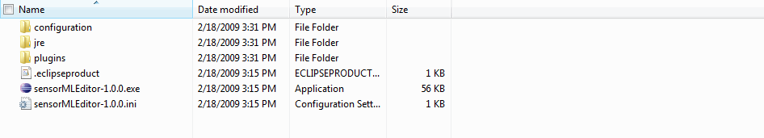

Installation
After downloading the SensorMLEditor.zip file, extract all of the contents to a directory of your choice. A folder named SensorMLEditor will appear in the directory and will contain the folders depicted below. Double click on the executable "sensorMLEditor-1.0.0.exe" to launch your application.
